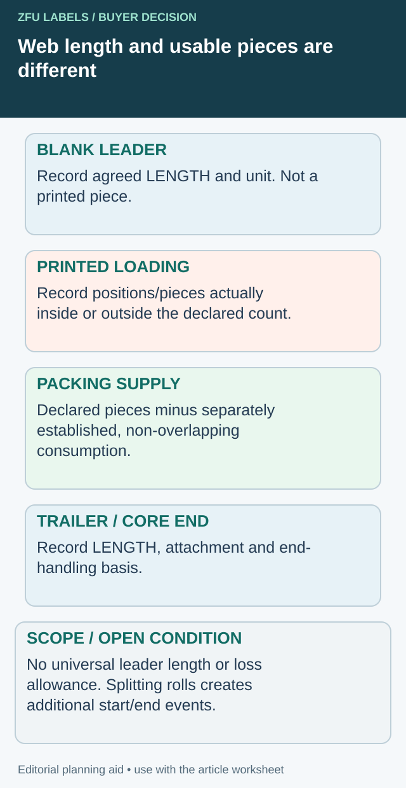

The roll contains the right artwork and fits the core holder, but the operator needs to thread the web before the first usable label reaches the applicator. At the other end, the remaining web must leave the roll in a controlled way. Those non-product sections are easy to omit from a purchasing specification.
Agree the leader and trailer arrangement with the equipment owner and converter. Identify the usable label quantity separately from the web used for loading and end-of-roll handling. There is no universal length that suits every applicator and winding arrangement.

Compare the roll-end offers without converting away uncertainty
One converter may specify blank leader length, while another proposes printed labels consumed during threading. Put both offers into a section-by-section crosswalk before comparing usable output. A length is not a label count unless the relevant repeat geometry and included sections are known; blank liner is not a printed product piece.


| Web section | Native unit to retain | Quantity treatment to agree |
|---|---|---|
| Blank leader | Length with the agreed origin and unit | Excluded from printed piece count unless explicitly defined otherwise |
| Printed loading section | Identified positions/pieces and any length information | Distinguish expected loading use from usable packing allocation |
| Ordinary printed supply | Declared piece basis and roll identity | Record exceptions under the agreed counting method |
| Internal joint region | Joint record and actual affected positions if known | Do not presume a fixed loss per joint |
| Trailer/core end | Length and attachment arrangement | Keep non-product web and end handling separate |
Ask which count the offer is promising
For a hypothetical comparison, Offer A includes a specified blank leader and declares a net printed quantity. Offer B declares nominal printed positions with some used for loading. The same headline piece total is not yet a common deliverable. Ask B to identify whether loading positions are inside that total; ask A whether any printed setup use still occurs after threading. Do not assume that blank leader eliminates all setup losses.
If one roll is split into several smaller rolls, each resulting loading event can change the required end arrangement and expected setup work. Ask the converter and equipment owner to confirm the actual delivery plan. Dividing the original usable quantity by the number of rolls does not demonstrate that all new starts and tails are covered.
Where a conversion from length to positions is proposed, retain the underlying pitch, direction, excluded sections and rounding method. If these are missing, mark the calculated count as unresolved rather than insert a generic repeat. Confirm the end arrangement with the equipment owner under its supported procedure; this crosswalk does not prescribe web threading or machine changes.
The purchasing comparison then has three separate values: supplied web arrangement, declared printed pieces and expected packing availability under the stated assumptions. It can reveal a different price or loading burden without alleging that either supplier miscounted.
Begin at the actual labeling station
Ask the line owner to show the web path and loading procedure. Identify how the roll is mounted, which edge leads, where the web threads and how the first labels are positioned. The supplier needs a drawing or clear description that relates to the equipment, not an unexplained unwind number.
The unwind direction guide connects orientation to the actual station. Leaders and trailers belong in that same drawing because their placement is meaningful only relative to the label sequence and direction of use.
If rolls serve several facilities, confirm whether their loading requirements are compatible. The same artwork does not make one leader arrangement suitable for every machine. Split the supply specification where the difference matters.
Define what the non-product web should be
Ask whether the proposed leader is plain liner, unprinted label stock, a separate web joined to the roll or another arrangement. The equipment owner and converter should review the actual materials and any joint. A length alone does not define stiffness, release behavior or detection features.
State how the first usable label is identified. If loading consumes printed labels rather than a separate blank section, keep that expected consumption visible in the quantity plan. Do not quietly include those pieces in a guaranteed usable production count.
At the tail, clarify what remains near the core and how the end is secured. The relevant question is whether the agreed loading and end-of-roll procedure can be completed without an unexpected interruption or material entering the wrong part of the machine.
Use a roll-end specification record
| Field | Confirmation needed |
|---|---|
| Equipment | Station reference and relevant loading instructions |
| Web direction | Leading label edge, print orientation and winding side |
| Leader | Material, required arrangement and agreed length basis |
| First usable label | Position, identification and any loading consumption |
| Joins | Location, material and acceptance under the line procedure |
| Trailer | Tail arrangement and required end-of-roll handling |
| Core attachment | Supported method and any restriction from the machine owner |
| Quantity declaration | Whether non-product web and setup labels are excluded |
| Trial evidence | Roll reference and observed loading/end result |
The record helps the parties specify the interface. It does not authorize changing a machine's guarding, web path or operating procedure. The equipment owner remains responsible for safe loading and operation.
Compare the proposal with a representative roll
Where the arrangement is new, ask for a roll that represents the proposed supply. A short flat strip may show the label but cannot demonstrate loading from the actual core or end-of-roll behavior.
Record the roll geometry alongside the leader and trailer. The roll-size guide addresses core, outside diameter and web requirements. If a trial uses a different core or a much smaller roll, identify that difference when deciding what the observation supports.
Observe both the start and end under the authorized procedure. A trial that stops halfway through the roll cannot establish the tail arrangement. If the full sequence is not evaluated, leave that part of the approval open instead of describing the whole interface as validated.
Keep splices and loading web distinct
A leader joined to the printed web creates a different record from an internal production splice, even if both use a joining material. Agree how each is identified and whether it affects detection, threading or the first usable label.
The splice acceptance guide addresses joint identity and roll records. Do not let a general statement allowing splices replace the specific leader or trailer requirement.
Ask how the supplier will maintain the arrangement after rewinding, inspection or a partial-roll correction. A later finishing step can change which end becomes the start. The delivered roll should match the approved direction and end configuration, not only the original press arrangement.
Make the quantity consequence explicit
If the line needs printed labels for setup, allocate them by SKU and component. If plain liner supplies the loading length, confirm how it appears in the roll's reported total. Keep net usable labels, web length and roll count as separate values.
For a hypothetical soup-label order, two packing stations may consume different quantities during loading. Sending equal nominal rolls to both does not necessarily create equal usable output. Use the actual approved procedure and observed records when planning the next order.
Avoid adding an arbitrary allowance because it seems generous. Excess web can also affect packing and handling. Ask for the arrangement the line needs and the supplier can reliably deliver.
Verify the interface at the first delivery
Check the delivered roll marks and sample arrangement against the specification. If the loading web differs, obtain the technical owner's decision before assuming the operator can work around it. Record any authorized deviation for the next purchase.
Resolve the specific label handoff
Include station/end drawing, each web section and unit, declared count basis and any measured setup use.
Prepare the label specification inquiry. The form opens an email draft for your review; attachments go through the listed email or WhatsApp route. Actual supply scope, pricing, samples and timing need project confirmation.
Related decisions: Roll Label Splices: Link Each Joint Record to the Delivered Roll; Label Roll Counts: Reconcile Delivered Labels with Usable Quantity; Labels Sent to a Co-Packer: Separate Receipt from Production Release